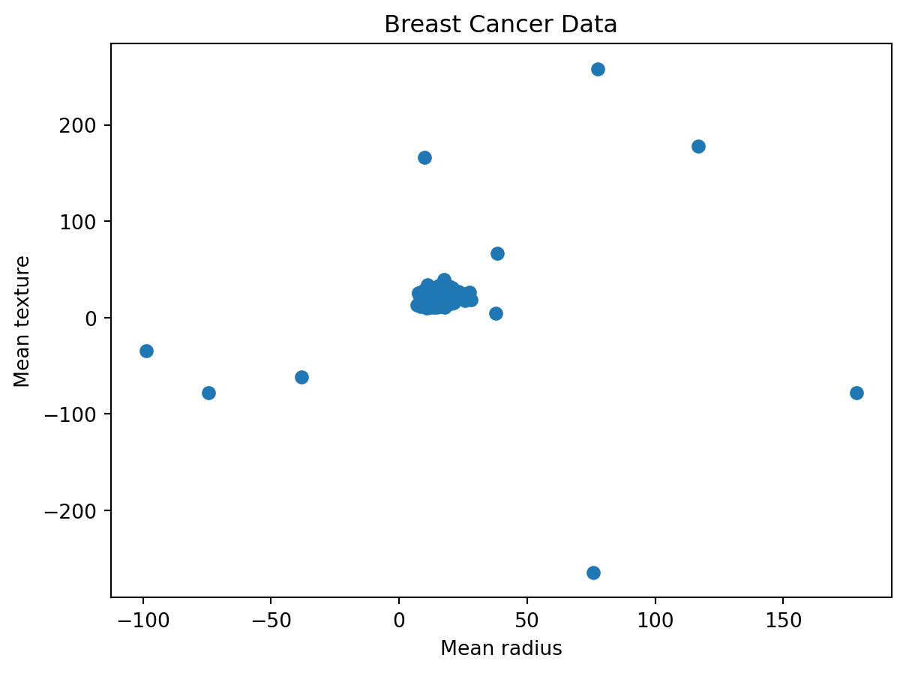
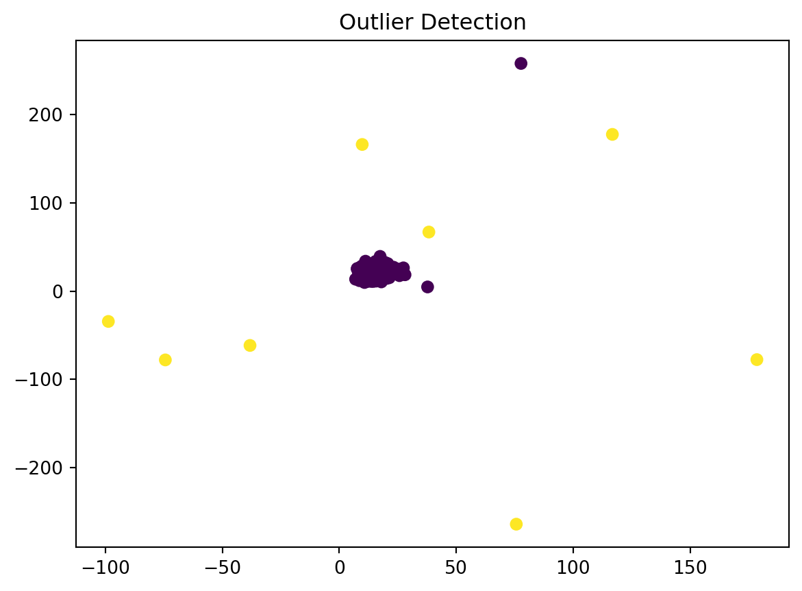

import numpy as np
import pandas as pd
import matplotlib.pyplot as plt
from sklearn.neighbors import LocalOutlierFactor
from sklearn.datasets import load_breast_cancer
from sklearn.linear_model import LinearRegressionThis post gives detailed descriptions and analysis about Anomaly & Outlier Detection
Introduction to Anomaly and Outlier Detection
Anomaly & Outlier Detection is a concept in machine learning where different graphs are analyzed for data that seems “different” or wrong compared to the other data. Throughout this post, we will dive deeper into Anomaly and Outlier Detection in machine learning using Python, Scikit-learn, and Tensorflow highlighting the importance of this concept. There will also be several data visualizations and executable code chunks to emphasize these points.
Importance of Anomaly & Outlier Detection
The detection of these unusual variables is very important as it validates the data and ensures the analysis can be done correctly. If there are a couple points that are way off from the bulk of the data, it causes the analyst to question the data and wonder why that occurred and if the data points should still be considered. The points could mess up trend lines and other predictions, so it is important that these points are found and dealt with correctly.
Step 0:
This step is to ensure that required libraries are installed on the machine before proceeding.
---
pip install numpy pandas matplotlib scikit-learn
---This step installs the required libraries to run the code below. Ensure python is installed on the machine already and the terminal has admin access when running this command.
Step 1:
When using Python, we have to import some libraries that will be utilized throughout the blog.
Some of the imports include numpy and pandas for data manipulation, sklearn modules from training and evaluation, and LocalOutlierFactor for analysis.
Step 2:
Import the data set. We then peek the data in a scatter-plot matrix.
data = load_breast_cancer()
X = data.data
y = data.target
# Add outlier points
num_outliers = 10
random_indices = np.random.choice(len(X), num_outliers)
for i in random_indices:
X[i] += np.random.normal(size=X.shape[1]) * 100
plt.scatter(X[:,0], X[:,1])
plt.title('Breast Cancer Data')
plt.xlabel('Mean radius')
plt.ylabel('Mean texture')
plt.show()
This code imports the breast cancer data set and loads the data and target values into variables.
Step 3:
Next, we will fit the data.
lof = LocalOutlierFactor()
lof.fit_predict(X)array([ 1, 1, 1, -1, 1, -1, 1, 1, 1, -1, 1, 1, 1, 1, 1, 1, 1,
1, 1, 1, 1, 1, 1, -1, -1, 1, 1, 1, 1, 1, 1, -1, 1, 1,
1, 1, 1, 1, -1, 1, 1, 1, 1, 1, 1, 1, 1, 1, 1, 1, -1,
1, 1, 1, 1, 1, 1, 1, 1, 1, 1, 1, 1, 1, -1, 1, 1, 1,
1, 1, 1, 1, 1, 1, 1, 1, 1, -1, 1, 1, 1, 1, -1, 1, 1,
1, 1, 1, 1, 1, 1, 1, 1, 1, 1, 1, 1, 1, 1, 1, 1, -1,
1, 1, 1, 1, 1, 1, 1, 1, 1, 1, 1, 1, 1, 1, 1, 1, 1,
1, 1, 1, -1, 1, 1, 1, 1, 1, 1, 1, 1, 1, 1, 1, 1, 1,
1, 1, 1, 1, 1, 1, 1, 1, 1, 1, 1, 1, 1, -1, 1, 1, 1,
1, 1, 1, 1, 1, 1, 1, 1, 1, 1, 1, 1, 1, 1, 1, 1, 1,
1, 1, 1, 1, 1, 1, 1, 1, 1, 1, -1, 1, 1, 1, 1, 1, 1,
1, 1, -1, 1, 1, 1, -1, 1, 1, 1, 1, 1, 1, 1, 1, -1, -1,
1, 1, -1, 1, 1, 1, 1, 1, -1, 1, 1, 1, 1, 1, 1, -1, 1,
1, 1, -1, -1, 1, 1, 1, 1, 1, 1, 1, 1, 1, 1, 1, -1, 1,
1, 1, 1, 1, 1, 1, 1, 1, 1, 1, 1, 1, 1, 1, 1, 1, 1,
1, 1, 1, 1, 1, -1, 1, 1, 1, 1, -1, 1, 1, 1, 1, 1, 1,
1, 1, 1, -1, 1, 1, 1, 1, 1, 1, 1, 1, 1, 1, 1, 1, 1,
1, 1, 1, 1, 1, 1, 1, 1, 1, 1, 1, 1, 1, 1, 1, 1, 1,
1, 1, 1, 1, 1, 1, 1, 1, 1, 1, 1, 1, 1, 1, 1, 1, 1,
1, 1, 1, 1, 1, 1, 1, 1, 1, 1, 1, 1, 1, 1, 1, 1, -1,
1, 1, 1, 1, 1, -1, 1, 1, 1, 1, 1, 1, -1, 1, 1, 1, 1,
1, 1, -1, 1, 1, 1, 1, 1, 1, 1, 1, -1, 1, 1, 1, 1, 1,
1, 1, 1, 1, 1, 1, 1, 1, 1, 1, 1, 1, 1, 1, 1, 1, 1,
1, 1, 1, 1, 1, 1, 1, 1, 1, 1, 1, 1, 1, 1, 1, 1, 1,
1, 1, 1, 1, 1, 1, 1, 1, 1, -1, 1, 1, 1, 1, 1, 1, 1,
1, 1, 1, 1, 1, 1, 1, 1, 1, 1, 1, -1, 1, 1, 1, 1, 1,
1, 1, 1, 1, 1, 1, 1, 1, 1, 1, 1, 1, 1, 1, 1, 1, 1,
1, 1, -1, 1, 1, 1, 1, 1, 1, 1, 1, 1, 1, 1, 1, 1, 1,
1, 1, 1, 1, 1, 1, 1, 1, 1, 1, 1, 1, 1, 1, 1, 1, 1,
1, 1, 1, 1, 1, 1, 1, 1, 1, 1, -1, 1, 1, 1, 1, 1, 1,
1, 1, 1, 1, 1, 1, 1, 1, 1, 1, 1, -1, 1, 1, 1, 1, 1,
1, 1, 1, 1, 1, 1, 1, 1, 1, 1, 1, 1, -1, 1, 1, 1, 1,
1, 1, 1, 1, 1, 1, 1, 1, 1, 1, 1, 1, 1, 1, 1, 1, 1,
1, 1, 1, 1, 1, 1, 1, 1])Step 4:
After fitting the data, we try to find the outliers.
scores = -lof.negative_outlier_factor_
threshold = 3.25
outliers = scores > threshold
num_outliers = outliers.sum()
print(f'{num_outliers} outliers detected.')8 outliers detected.This code prints the outliers detected. Clearly, there were 10 outliers that were detected in the data above.
Step 6:
Show data set with outliers
plt.scatter(X[:,0], X[:,1], c=outliers)
plt.title("Outlier Detection")
plt.show()
This code helps to evaluate the data illustrate which values are treated as the outliers. The yellow points in the graph are the outliers, while the purple set illustrates the majority of the data. We can clearly see that the yellow points are separated, hence making it more obvious that they are the outliers. There also appear to be some anomalies, the group of random points towards the corners.
Step 7:
The following code is to show the different formulas.
data = load_breast_cancer()
X = data.data
y = data.target
# Add outlier points
num_outliers = 10
random_indices = np.random.choice(len(X), num_outliers)
for i in random_indices:
X[i] += np.random.normal(size=X.shape[1]) * 100
# Regression with outliers
lr = LinearRegression().fit(X, y)
print("Regression line with outliers:")
print("y =", lr.coef_[0], "* x +", lr.intercept_)
# Regression without outliers
X_filtered = np.delete(X, random_indices, axis=0)
y_filtered = np.delete(y, random_indices)
lr.fit(X_filtered, y_filtered)
print("Regression line without outliers:")
print("y =", lr.coef_[0], "* x +", lr.intercept_)Regression line with outliers:
y = 0.021187315648114515 * x + 2.710600674221939
Regression line without outliers:
y = 0.19513516909472778 * x + 3.071764769641227When analyzing the formulas, we can see that they are drastically different, especially with one having a positive slope, and the other being a negative slope. This is all relevant on how the user deems the importance of these rogue data points.
Conclusion:
As shown throughout this post, highlighting outliers and anomalies is very important in realizing the validity and accuracy of the data. If there are too many rogue points, there could have been some faulty testing or something else was messed up along the say. Choosing what data points are outliers or not is very important, and it is vital that when training the machine learning model, it can accurately identify them. Once the model is trained on prior data, the data can then make fairly accurate predictions on the data entered and the validity and accuracy in comparison to the original values. This is a very important topic in terms of graphical analysis and for accurate forecasting, and as time progressing, it will be done better. In this post, the most basic level of detection was done, but it does highlight the importance of this topic.